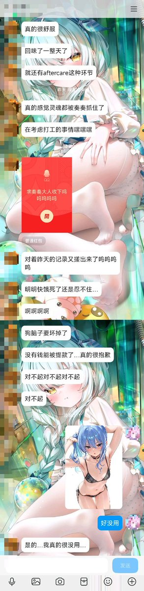
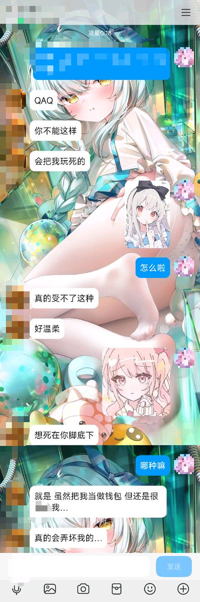
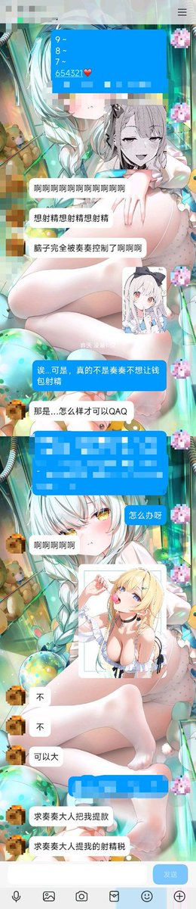
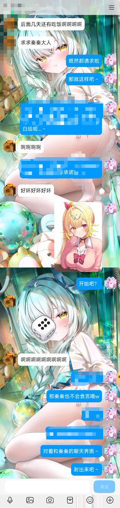
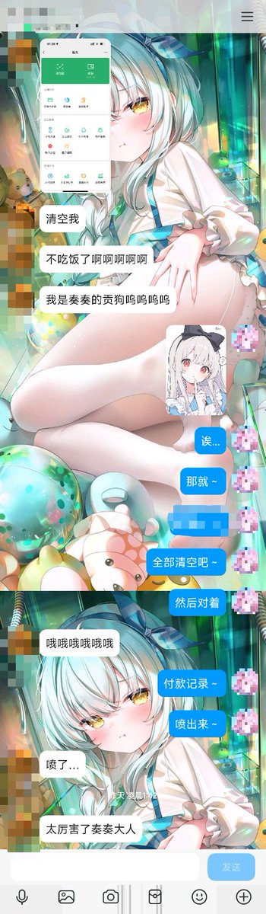

aftercare～
其实本公主一直秉承着流精，清空钱包以后，会给予钱包们一些鼓励或者安慰w，在心理学上能让钱包们感受到本公主的温暖，从而产生依赖哦，即使本公主只是单纯的为了自己的利益出发🤍
真是的，都怪这只大钱包说出这么涩情吸引本公主想使用报废掉他的告白～
怎么样，你也想死在本公主脚下吗🤍

其实本公主一直秉承着流精，清空钱包以后，会给予钱包们一些鼓励或者安慰w，在心理学上能让钱包们感受到本公主的温暖，从而产生依赖哦，即使本公主只是单纯的为了自己的利益出发🤍
真是的，都怪这只大钱包说出这么涩情吸引本公主想使用报废掉他的告白～
怎么样，你也想死在本公主脚下吗🤍





本公主从头到尾都没有骗过这只钱包哦，只是运用了一些小技巧而已，没想到看见本公主说数字就成丧志的笨蛋了哦～
还主动提出让本公主打破规则使用他...钱包们的小心思真是太坏了～
明明都可以射精了，但身为钱包的它很清楚不全部清空是不能射精的，清空以后对着付款记录喷出来啦🤍
别急着走，还有彩蛋～ https://t.co/Etv3Pc8v9F
还主动提出让本公主打破规则使用他...钱包们的小心思真是太坏了～
明明都可以射精了，但身为钱包的它很清楚不全部清空是不能射精的，清空以后对着付款记录喷出来啦🤍
别急着走，还有彩蛋～ https://t.co/Etv3Pc8v9F